PHP e-commerce build · demo walkthrough
Every screen below is the real application running — PHP 8 with a custom MVC, PDO/MySQL, and no paid components. Nothing here is a mockup or a template.
Storefront
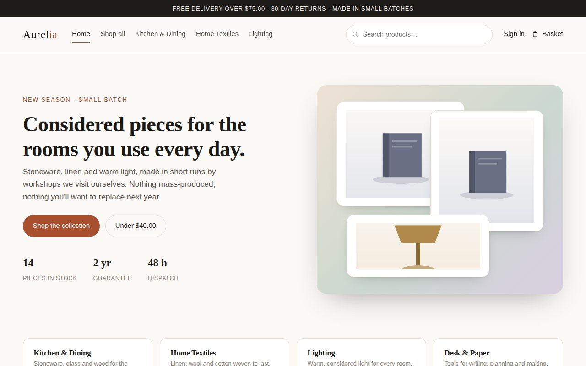
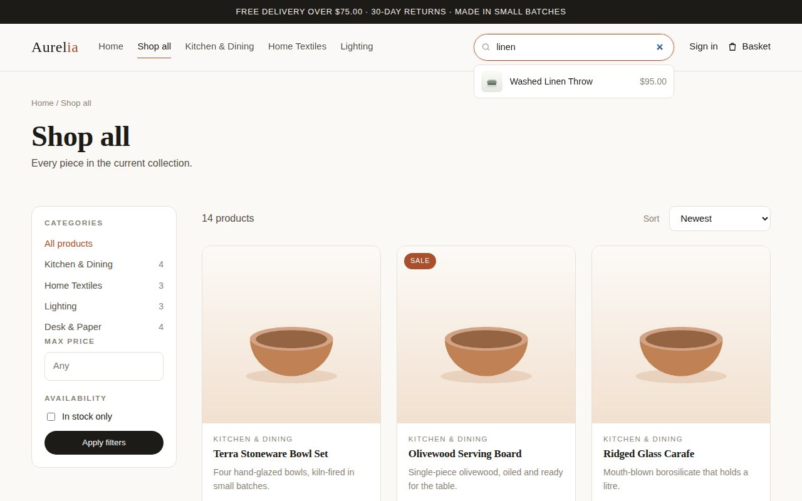
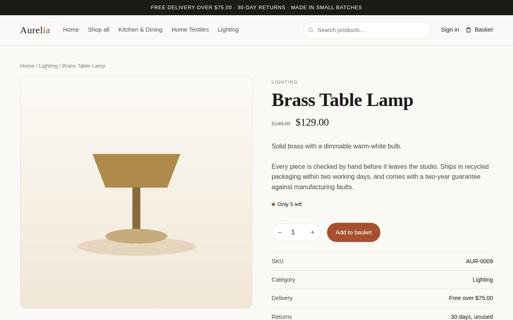
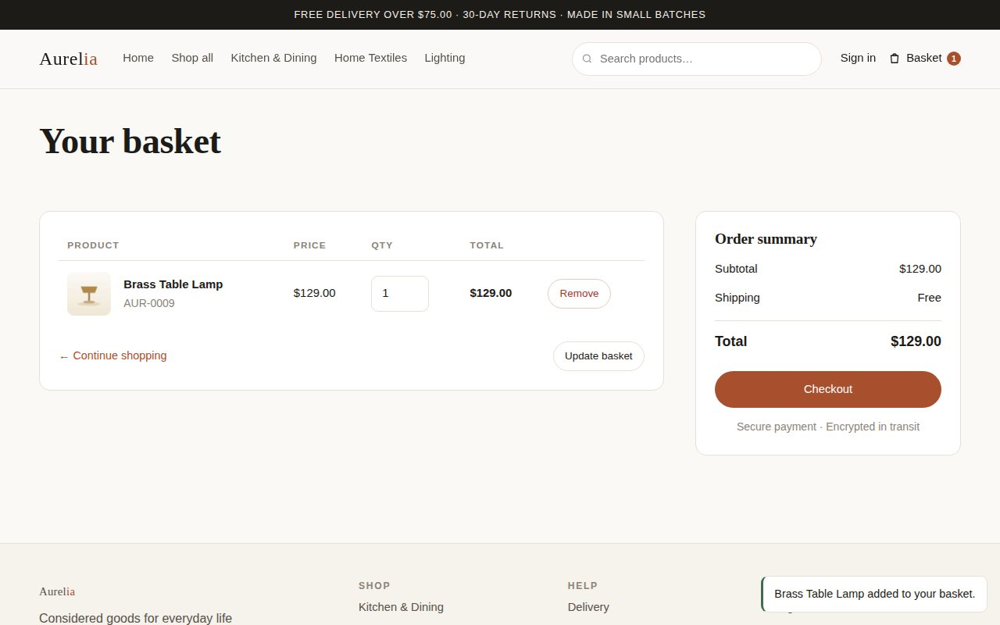
Checkout and payment
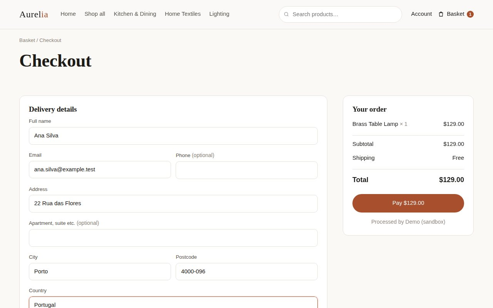
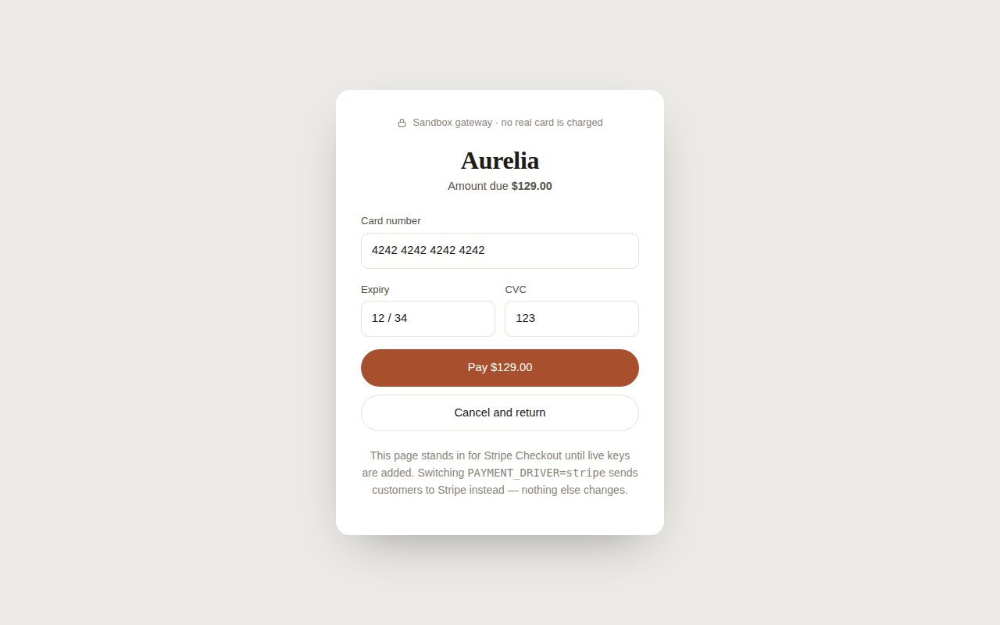
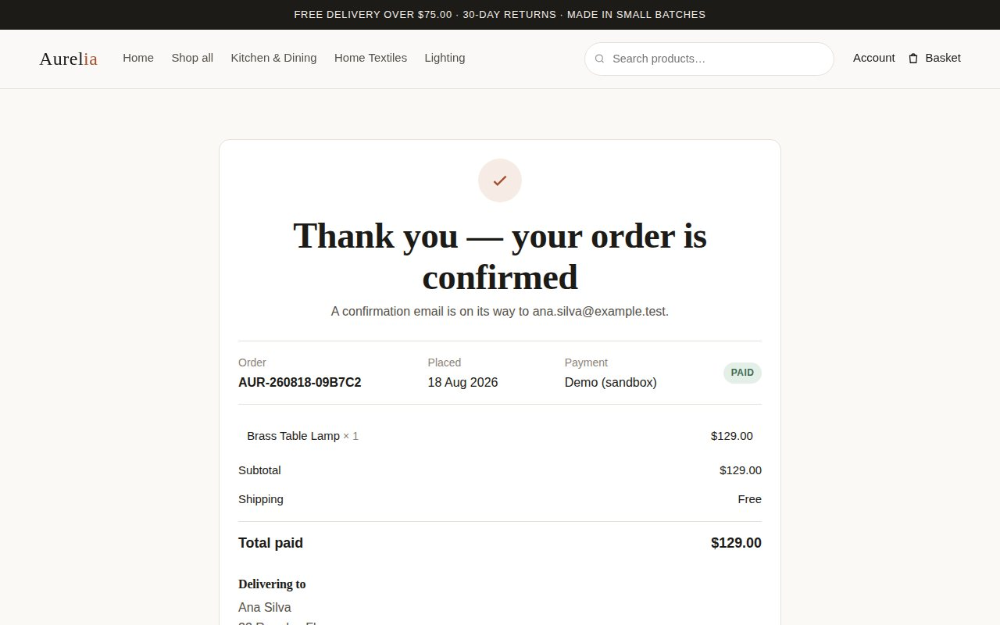
Customer accounts
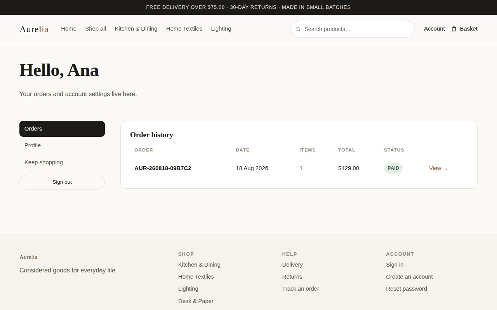
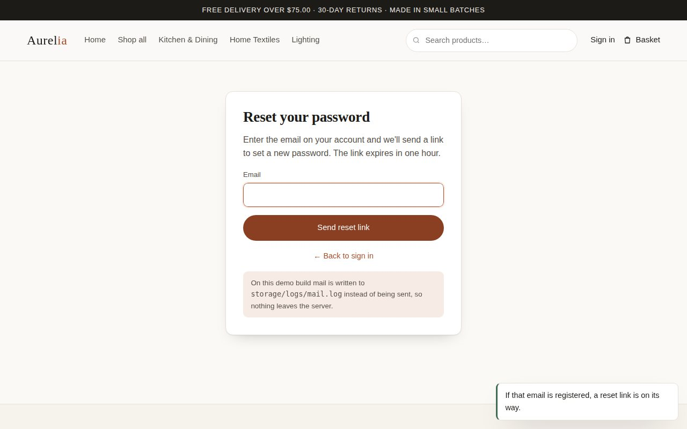
Admin panel
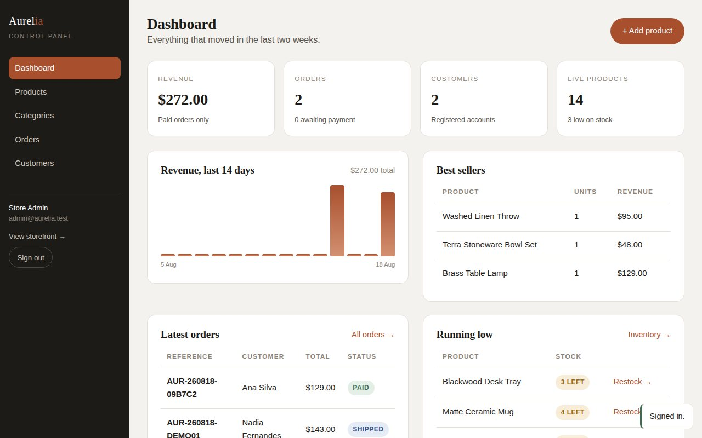
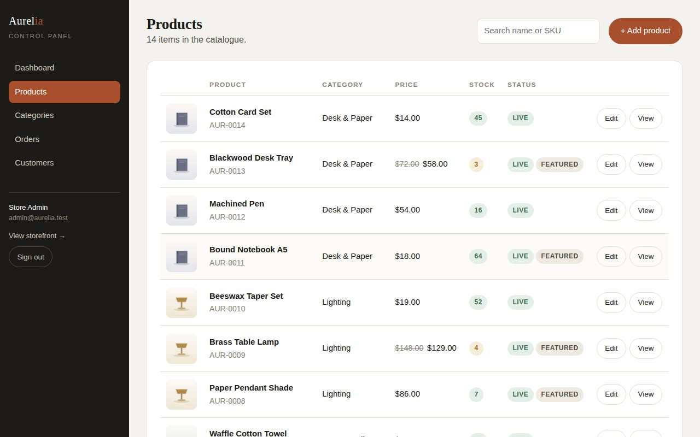
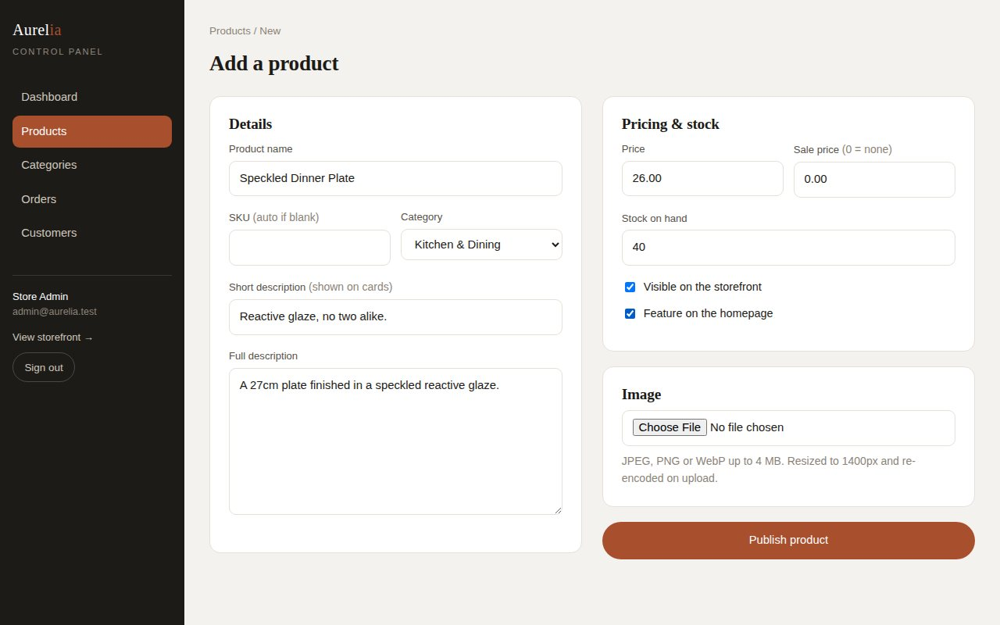
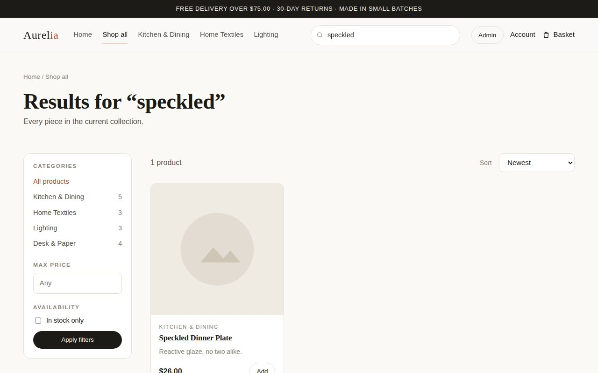
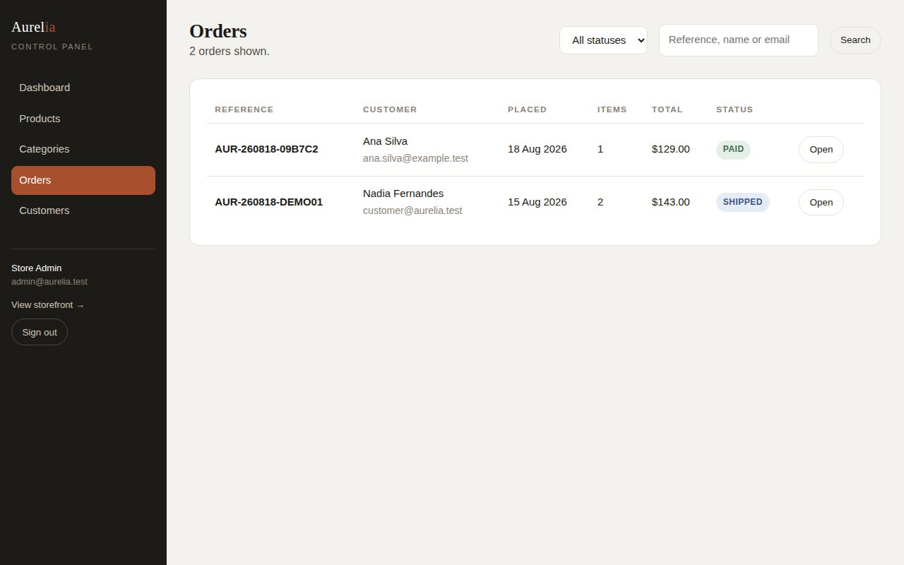
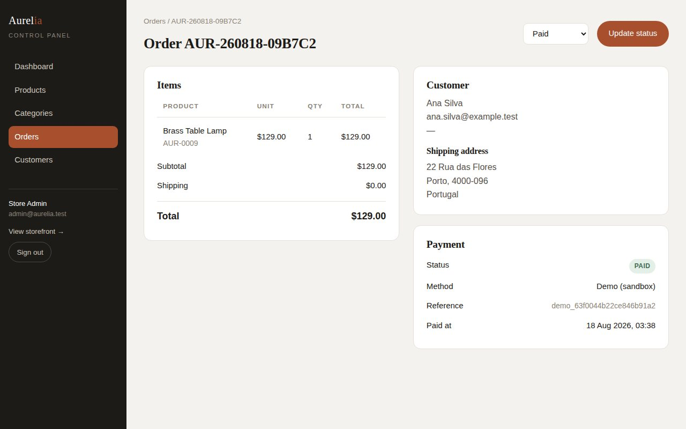
On a phone
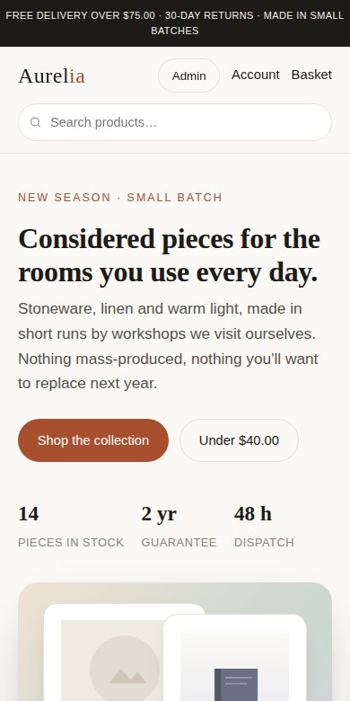
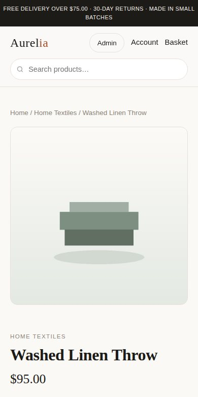
How it was checked
The whole path — browse, search, add to basket, register, check out, pay, receive the confirmation, see it in order history, then sign in as admin, publish a product and watch it appear on the storefront — was driven through a real browser automatically, at both desktop and phone sizes, before any of it was sent to you. The password reset was tested separately, token and all.
Source code: github.com/anirudhatalmale6-alt/aurelia-php-ecommerce